4. 서비스, 이벤트 작성
프로시저란 실제 테이블을 수정할 때 많이 사용
화면 구성 시 기본적으로 – 조회SP, 체크SP, 저장SP => 3개를 한 세트로 많이 씀
=> 지금은 시트, 마스터 영역 따로 있으므로
=> 3개씩 총 6개가 필요
*** SP WorkList 우클릭 – 새 SP
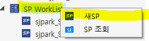
- 스크립트ID // 스크립트명 // 스크립트유형
총 3가지 작성
- 스크립트ID
프로시저의 경우 S로시작
프로그램ID : Frm WSLSalesOrder_sjpark_sysdevwk
스크립트ID : sjpark_S WSLSalesOrderCheck
스크립트ID : sjpark_SWSLSalesOrderQuery 조회
sjpark_SWSLSalesOrderCheck 체크
sjpark_SWSLSalesOrderSave 저장
sjpark_SWSLSalesOrderItemQuery 조회
sjpark_SWSLSalesOrderItemCheck 체크
sjpark_SWSLSalesOrderItemSave 저장
- 스크립트명
스크립트명은 별로 안 중요하지만 ‘비고’느낌으로 다른 사람이 볼 ‘명칭’
주문입력 마스터조회_sjpark
주문입력 마스터체크_sjpark
주문입력 마스터저장_sjpark
주문입력 아이템조회_sjpark
주문입력 아이템체크_sjpark
주문입력 아이템저장_sjpark
- 스크립트유형
Q-조회
E-처리
S-저장
====> SP를 만든건아니고 / 명칭을 만든 단계
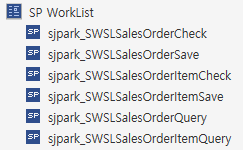
========================================================================================================================
-
서비스 만들기
-
메소드 클릭 => 하단 ‘서비스 WF’ 선택
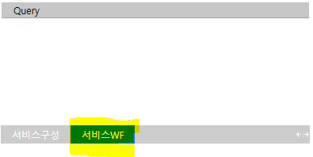
- 오른쪽 클릭 – 추가 – SP Method
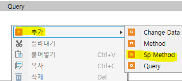
- SP WorkList에서 필요한 SP를 맨 오른쪽 회색 영역에 드래그하여 추가
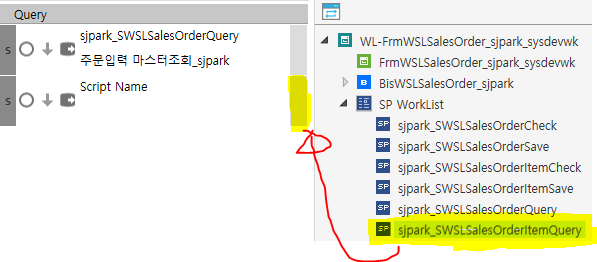
- Query (서비스에 SP 메소드 추가)
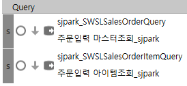
- Save (서비스에 SP 메소드 추가)
체크 : 저장할 때 실제 데이터가 유효한지 checkList
저장 : 실제 저장
체크 – 체크 – 저장 – 저장 (순서는 딱히 상관 없다)
(** 체크의 경우 어떤게 체크된지 보여줘야 하기 때문에 트랜잭션을 걸지 않는다)
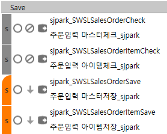
오류가 생기면 다음 단계로 안 넘어간다
(Check – 체크에서 사용)
* 앞에 바를 누르면 색이 변함 (주황색) =＞ 트랜잭션 기능 (보통 저장 부분에서 사용)
마지막 부분이 꺾인 모양이 아니어도 상관없다
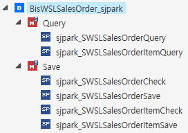
실제 테이블에 데이터가 들어가는 작업은 SP에서 진행
SP는 한번 열었다가 닫아야 체크인이 가능
+. SP 체크인이 안 될 때 => 열고 닫아라
========================================================================================================================
-
서비스 구성
-
master 영역
DataFieldName + DataFieldCd
- 서비스 명칭과 실제 테이블 명칭은 맞춰주는게 좋다
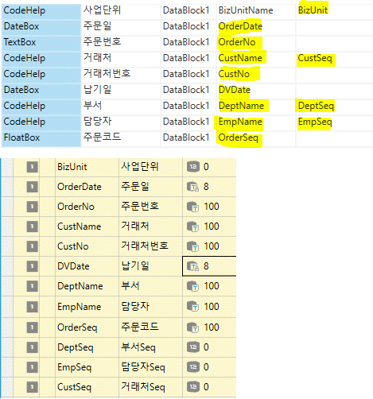
*** 유형
==================================================
* 고정값 = Fix String
OrderDate(주문일), DVDate(납기일)
=> (8자리)
* 키 값은 integer 형이므로 int 사용
ex. BizUnit, DeptSeq, EmpSeq, CustSeq
* Double (시트 영역)
ex. Qty (수량), 단가 (Price), 판매금액 (CurAmt)
==================================================
2. 시트 영역
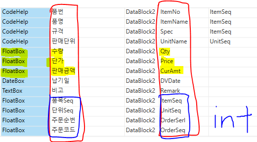
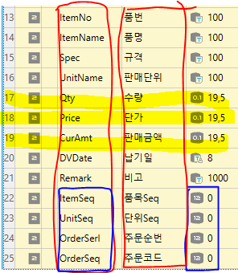
판매단위 또한 키 값을 통해 명칭도 가져올 수 있다
- 키 값 = INT
ItemSeq, UnitSeq, OrderSerl, OrderSeq
- 고정값
DVDate
- Double => FloatBox
Qty, Price, CurAmt
- 화살표
왼쪽 – SP로 가져가는 값
오른쪽 – SP에서 작업을 하고 화면으로(결과로) 보여주는 방향
* Query
왼쪽 : OrderSeq로 모든 데이터 가져올 수 있으므로 OrderSeq만 체크
오른쪽 : 데이터 다 가져오기
* Save
왼쪽, 오른쪽 동일
- 코드도움은 키 값만 가지고도 명칭을 가져올 수 있기 때문에
Save 안해도 된다
==> 키 값 기준으로 저장한다
+. 사업단위 – 화면에서의 명칭 (비고 이기 때문에 안 넣어도 되지만 있는게 좋다 / 주석)
+. 품번, 품명, 규격 은 한 세트
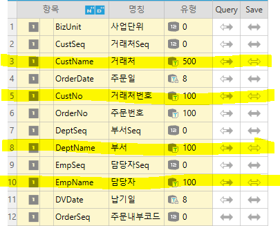